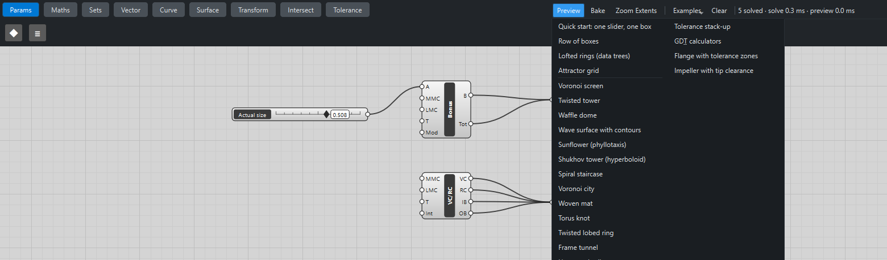

Twenty-eight parametric designs, each built only from the components that ship with Katydid. Load any of them with Examples on the canvas toolbar, drag the sliders, and bake the result into your document. Each one has a step-by-step tutorial.
The Examples menu

Examples lists every ready-made definition: the thirty-nine above, the tutorial definitions and the tolerance examples. Choosing one replaces what is on the canvas, so save first if you want to keep your own work. Each loads in a second or two; the preview then updates as you drag.
These pictures come from the same definitions. The red preview is what you see while you work; the colours come from baking the final components and setting their colour in FreeCAD, which is how you would prepare a render of your own.
What they teach
| Example | New ideas |
|---|---|
Populate 2D, Voronoi, Area centroids, scaling about a per-item centre, cutting many holes with one Solid Difference |
|
One item per floor from Series, a shaping formula in Expression, Regular Polygon, Loft with Flatten, Planar Surface slabs |
|
A profile curve from a formula, Cap Holes to close a loft, Section with a list of offsets, centring a series, thickening flat regions |
|
A 2D grid with Graft, a formula of two variables, Surface From Points, Contour at a list of heights |
|
Positions from formulas of an item’s number, Sphere and Move with lists, the golden angle |
|
Divide Curve, Shift List to pair offset points, Line, Evaluate Curve with Graft, a periodic Interpolate, Pipe |
|
Rotate with a list of angles, Cylinder, cos/sin positions, a rail interpolated through baluster tops |
|
Plots and streets with Scale, a Gaussian height formula, repeatable noise from Deconstruct and Expression |
|
Two families from one grafted tree, over-under with |
|
A parametric space curve, a periodic Interpolate, Pipe along a closed 3D curve |
|
A profile per branch, lobes from |
|
One Boolean, many copies: Scale, Rotate about a centre, Move with lists |
|
Doubly ruled surfaces, Ruled Surface, copies by grafting Rotate's angles |
|
A phase per branch, Ruled Surface between paired curves, boards from Extrude |
|
An attractor driving solids: Sphere sizes from Remap, one Solid Difference with a list |
|
Geometry and tolerance together: Bonus Tolerance, Virtual & Resultant Condition, a Panel |
|
Arc 3Pt, Evaluate Curve at offset parameters, Mirror |
|
A tangent from a derivative, Circle CNR square to a curve, a self-similar Loft |
|
|
|
Shift List as a rotation, Arc 3Pt through three rings |
|
A hexagonal grid with |
|
Several wires into one input, a scalloped rim, an array of arrays with Linear Array |
|
A damped ripple formula, cables and orbs that move together |
|
A parametric surface on a (u, v) grid, Surface From Points, Contour |
|
Arc 3Pt through three turned rings, two wires into one Loft |
|
An exact rotate-and-scale per tier, slabs by Extrude, corner spirals with Graft |
|
A lofted blade arrayed by grafted angles, a seam-safe Boolean cut, Stack-up and Monte Carlo |
|
One slider through a family of minimal surfaces |
|
List Item with index −1, Shift List to pair corners, a balance check by force densities |
|
One shape through Scale, Rotate and Move with a list per tier, then copies by Graft |
|
Six points wired into one Polyline, Offset Curve for walls, two interlocking rows, a property formula in a Panel |
|
Concentric arcs by Scale, Ruled Surface strips, Extrude by a list of heights |
|
Contour with grafted normals and offsets, a family shift that removes triple nodes, ribs by Extrude |
|
Solid Intersection of counter-twisted lofts, catenary arches from Expression, one Loft per grafted branch |
|
One shape rotated about its own root, a staggered grid of stations, flare from Remap |
|
A surface of constant negative curvature from Expression on a (u, v) grid |
|
Triangles picked with Cull Pattern and loor, one spoke turned three ways, one sector turned six ways |
|
One tree of holes per level, bars along three axes in one Solid Difference, a cut square to a body diagonal |
|
One vertebra copied about a centre of curvature, tendons from grafted eyelets, a kinematic formula in a Panel |
If you are new to Katydid, do the quick start and the attractor grid first: these examples use the same moves at a larger scale.